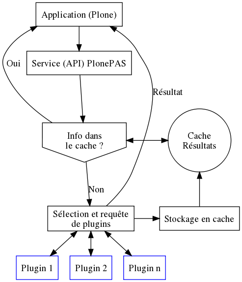

Architecture fonctionnelle
Lorsque l'un des services de PlonePAS est sollicité par l'application -
Plone ou l'un de ses composants d'extension – celui-ci sollicite l'un après
l'autre chaque plugin compatible avec l'opération demandée.
L'ordre de sollicitation des plugins pour chaque service est paramétrable en ZMI
par l'intégrateur.
Le schéma générique ci-dessous résume les opérations effectuées lors de
l'utilisation par une application de l'un des services de PlonePAS.

Quelques commentaires sur ce schéma :
- L'utilisation du cache n'est pas systématique. Dans certains cas, les plugins
eux-même peuvent être appellés à gérer leur propre cache.
- Pour certains services de PAS, plusieurs catégories de plugins peuvent
être utilisées. Le bloc "Sélection des plugins ..." et "Traitement des données
..." étant alors réitéré pour une autre catégorie de plugins.
- Pour certains services, par exemple l'authentification d'un utilisateur,
PlonePAS ne retient les résultats que d'un seul plugin, le premier qui
a fourni un résultat positif. Pour d'autres services, tel que l'obtention des
propriétés d'un utilisateur, les résultats fournis par l'ensemble des plugins
sélectionnés sont agglomérés.